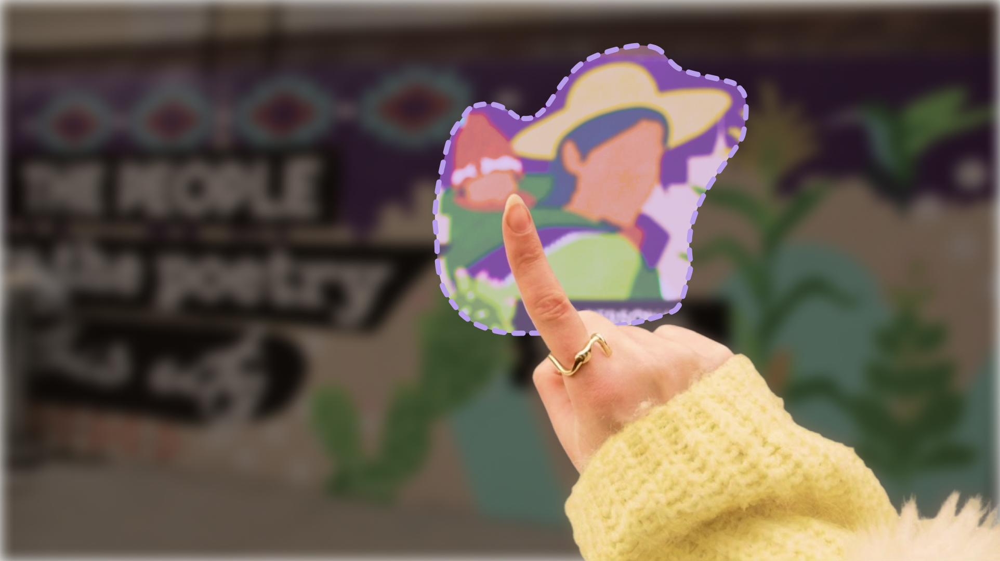
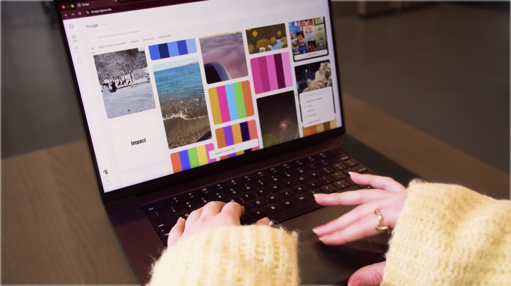
Wearable + AI · FigBuild 2026 · 72 hours
forage is a ring and an AI library that lets designers save inspiration with a gesture, the moment they see it. Designed and prototyped in 72 hours at FigBuild 2026 with three teammates.
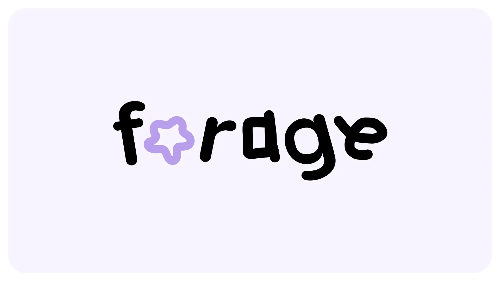
FigBuild challenge
Design a tool for one of the human senses, in one weekend.
FigBuild is Figma’s student design competition. The 2026 prompt:
“Design a tool that tracks, measures, visualizes or quantifies an aspect of human sensory experience. Within the tool, provide the ability to detect, enhance, or manipulate those same sensory inputs.”
- 72 hoursFriday, March 6 to Monday, March 9
- 2–4 per team5,686 students registered
- SubmitA 3–5 minute demo video and a Figma Slides deck with the prototype embedded
FigBuild 2026 rules, posted by Figma @ Parsons (@figmaatparsons) ↗
Problem
For designers, the world is an asset library you can’t “Save As.”
Designers spot usable moments everywhere: a color on a flower, the curve of a ceiling, the motion of a pour, the type on a menu. Inspiration hits mid-movement, too fast to open an app.
What does get saved lands in a camera roll or a screenshots folder, cut off from why it mattered. It’s hard to find again, and harder to reuse.
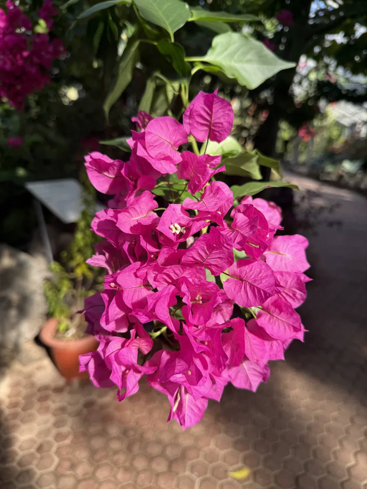
Color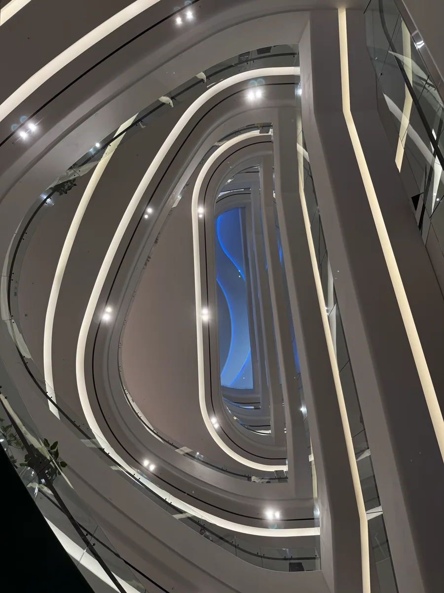
Image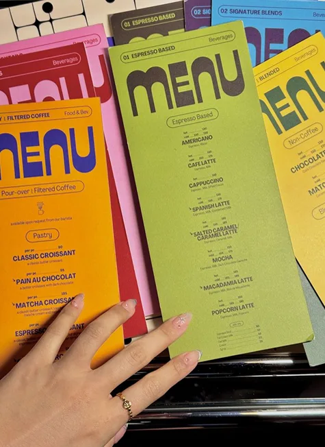
TextOpportunity
How might we make capturing inspiration feel as natural as noticing it, so it’s still usable when the work starts?
Solution
Treat inspiration as a sense: notice it, gesture, and it’s saved as a design asset.
forage pairs a ring with an AI library. Outline what caught your eye with a finger, then one gesture tells the ring what kind of asset it is. AI turns the capture into something you can use, like a palette, a typeface match, or a motion clip, and files it where you’ll find it later.
01 · Spot
Capture at the speed of perception
No phone, no app to open. The ring is already on your hand when the moment passes.
02 · Gather
One gesture per asset type
A small set of gestures, each mapped to one kind of capture: image, color, type, or motion.
03 · Create
AI does the sorting
Captures are grouped into Findings and Types automatically, so the library is organized before you open it.
Wearable
Everything needed to capture fits on one finger.
A micro camera, motion sensors, and haptics sit in a ring shaped like jewelry, not a gadget, so it’s something you’d actually wear. Double tap the ring to turn capture on or off. We designed it in six finishes.
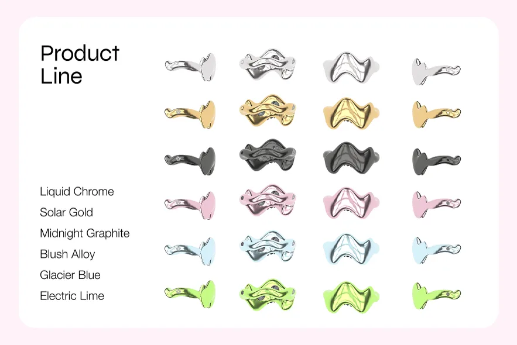
Gestures
Outline it in the air, then one gesture says what to keep.
Every capture starts the same way: draw a loose outline around the thing. The second gesture picks the asset type, and each type saves a different file.
Step 1
Outline in air
Draw a loose outline around the object.
Selection canvas
Step 2 · Image
Tap
Tap once after outlining.
PNG / JPG
Step 2 · Color
Two-finger tap
Tap with two fingers.
HEX code, or a 4–6 color palette
Step 2 · Type
Two-finger drag
Drag across the lettering.
OCR text + font match
Step 2 · Motion
Hold + drag
Hold, then drag slightly.
MP4 + GIF preview + timing curve
Product
The library sorts every capture by what it is, so it’s findable when you need it.
Captures land in the Field, newest first. Filter by type to pull up only colors, only typefaces, or only motion. Findings are AI clusters that surface patterns across what you’ve saved, and Boards collect captures for a project. This is the working prototype I built in Figma Make.
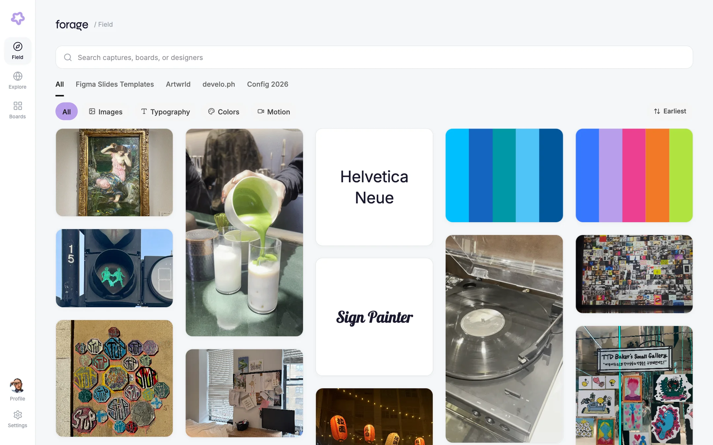
Use cases
From the street to the library in one gesture.
Two captures, start to finish: what the designer does with the ring, and where the capture ends up.
Capture image
Outline a poster, tap, and it’s saved as an image.
A café sign catches your eye on the way past. Outline it, tap once, and forage saves the image, cropped to what you outlined, straight into the Field.
Capture text
Drag two fingers across a sign to keep the lettering.
For type, the gesture is a two-finger drag along the words. forage reads the text and matches the typeface, so the capture comes back as a font you can use, not a blurry photo of an awning.
Research
Designers are stuck between finding inspiration and actually using it.
We had a weekend, so we went where designers already complain: Reddit threads about Pinterest, moodboards, and saving references. The same frustrations kept coming up.
User personas
Feeds that lose your place, and saves you can’t explain later.
We turned real quotes from r/Pinterest, r/Design, and r/graphic_design into four personas. Each one breaks at a different point between noticing something and using it.
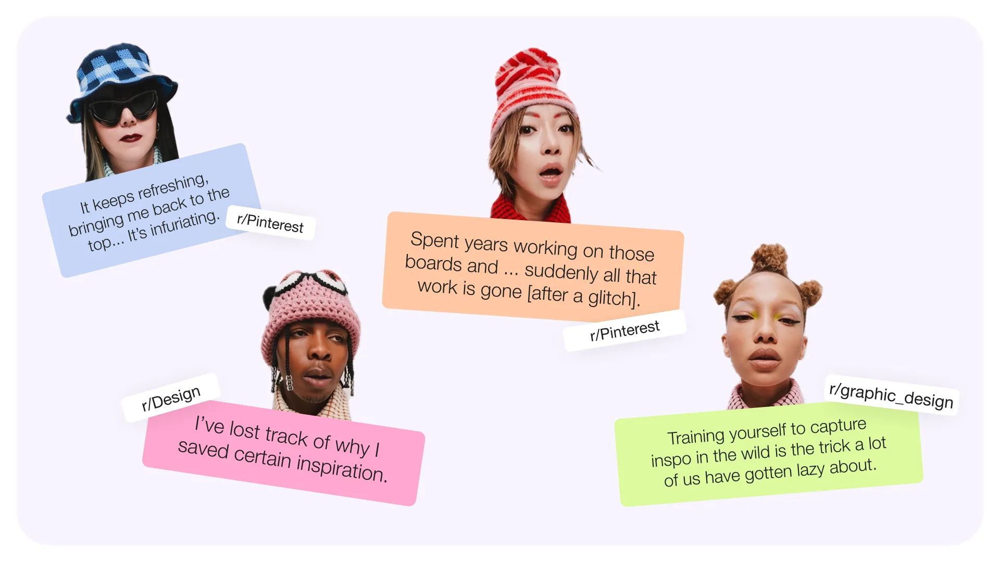
Inspiration as a sense
Inspiration doesn’t come from searching. It comes from noticing.
The prompt asked for a sense, so we looked at where our own inspiration actually came from: a painting in a museum, a wall of clippings, a studio pinboard, stickers on a street. None of it came from a search bar. We track our steps, our heart rate, and our sleep, but not what catches our eye.
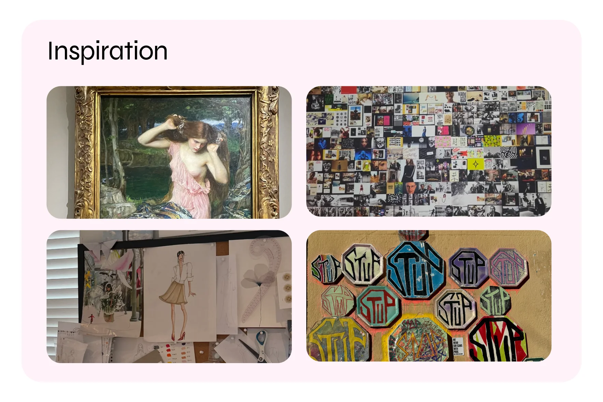
Wearable research
It had to read as jewelry, or nobody would wear it.
We collected sculptural rings and wearable tech on a shared Pinterest board. The ones that worked looked like jewelry first; the tech disappeared into the form.
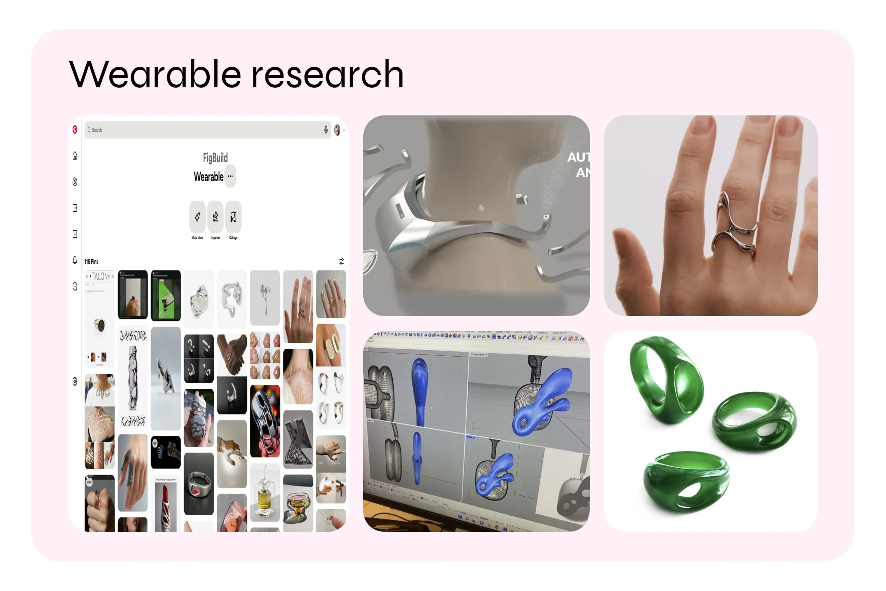
PRD
A PRD gave four people one product to build.
Before building, we pinned down the vocabulary (a capture, the Field, Findings, Types, Boards), the gesture system, and what each capture type outputs. Naming things early kept four people designing the same product in 72 hours.
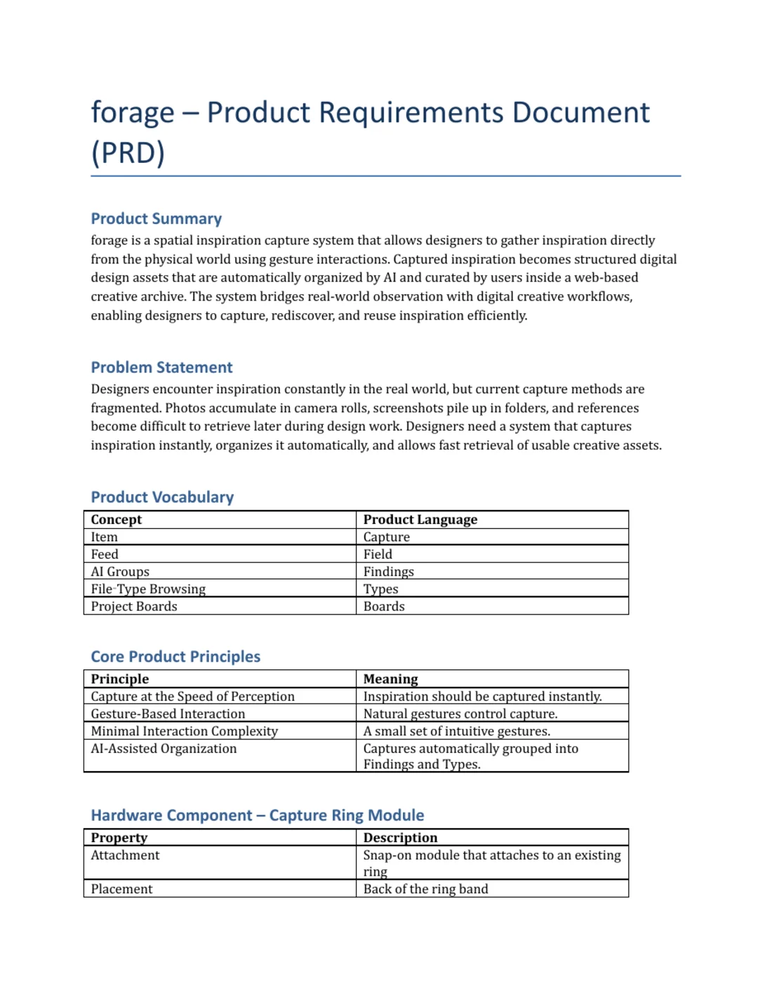
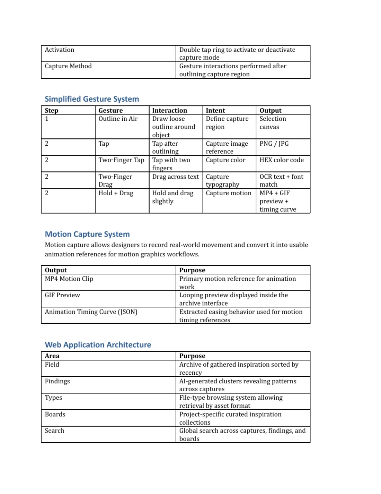
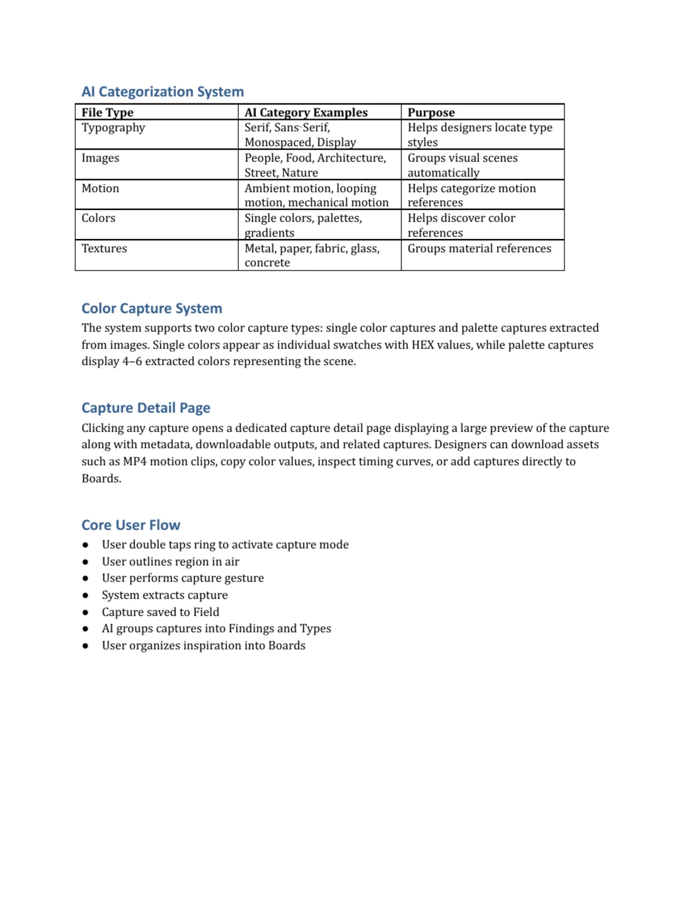
Iterations
Four people, two halves of a product, one weekend.
We split the work: the ring was modeled in Rhino 3D while the web app was built in Figma Make, and both met in the demo film.
Build stack
Each tool owned one part of the product.
Wearable
Rhino 3D
The ring’s form, sensor placement, and finishes, rendered for the product line.
Web app
Figma + Figma Make
Low-fi structure in Figma, then the working prototype in Figma Make, prompted from the PRD.
Story
After Effects + Premiere
Capture animations over real footage for the demo film, and the Figma Slides deck for judges.
Wearable rendering
From a gadget to jewelry.
The first forms looked like devices, easy to leave at home. We modeled the ring in Rhino 3D to sit on the hand like jewelry, then we tested finishes and fit across hands.


Gesture fine-tuning
Gestures had to be easy to do and impossible to confuse.
We photographed hand poses to find gestures that felt natural and didn’t look like each other, then walked through them against the prototype on a call. Every capture starts with a deliberate outline, so ordinary hand movements never trigger a save.

Low-fi
Boards, a first save, and a detail page, before any visual design.
Low-fi frames set the library’s skeleton: starting a board, the first save, the dashboard, list and collage views, and a single-item detail page.
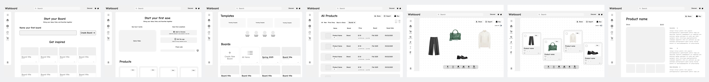
Start a boardFirst saveDashboardList viewCollage, labels offCollage, labels onDetailFigma Make
The first build was a dashboard. The final one is a field you browse.
I prompted the web app in Figma Make from the PRD and iterated on it through the weekend. Even the name changed along the way.
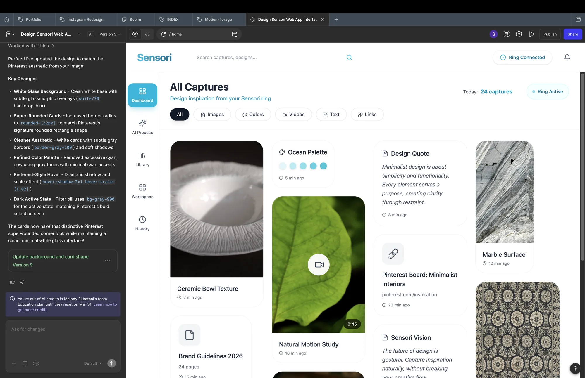
What it was
Called Sensori. A dashboard of every capture, styled like Pinterest, with the AI process as its own tab.
Next
Generic tabs (Images, Videos, Links) and hardware status up top. The next pass swapped them for the PRD’s own vocabulary.
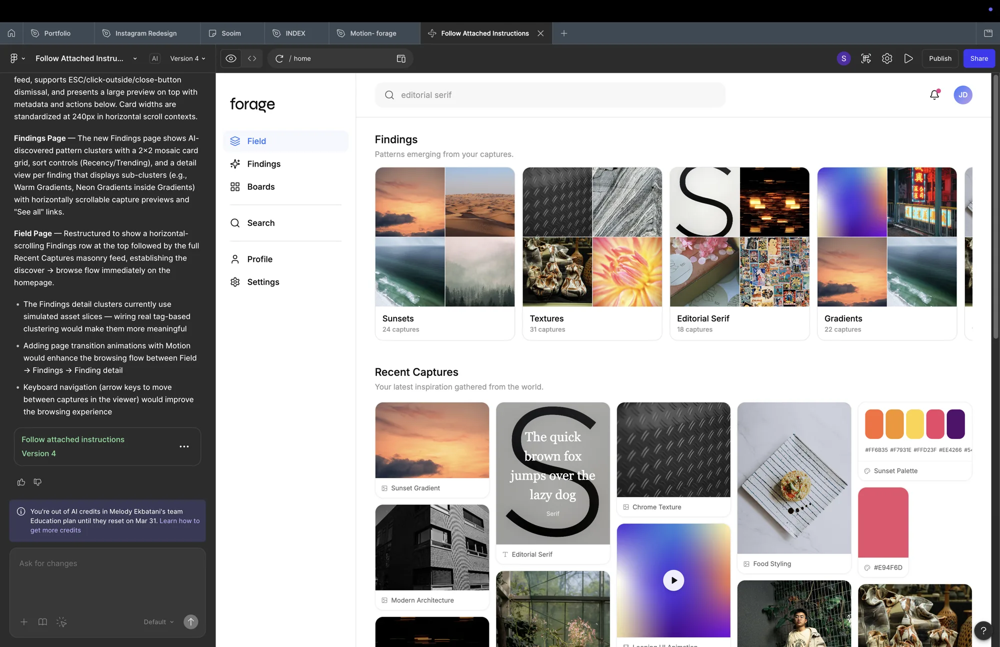
What it was
Renamed forage, with the PRD’s vocabulary: Field, Findings, Boards. AI clusters like Sunsets and Editorial Serif sit on top.
Next
The final version leads with the Field itself, with Findings moved to the sidebar.
Final
The Field comes first, with one filter per capture type. Findings and Boards live one click away in the sidebar.
Branding
The brand went from glossy 3D to something that looks hand-made.
Kinza and Lucy led the brand. It started from a moodboard of tactile, 3D objects, went through three names, and ended on a hand-drawn wordmark that looks like it came out of a sketchbook.
Moodboard
Glossy, squishy, collectible.
Liquid glass, inflated shapes, and toy-like objects: things you want to pick up and keep, which is what a capture should feel like.
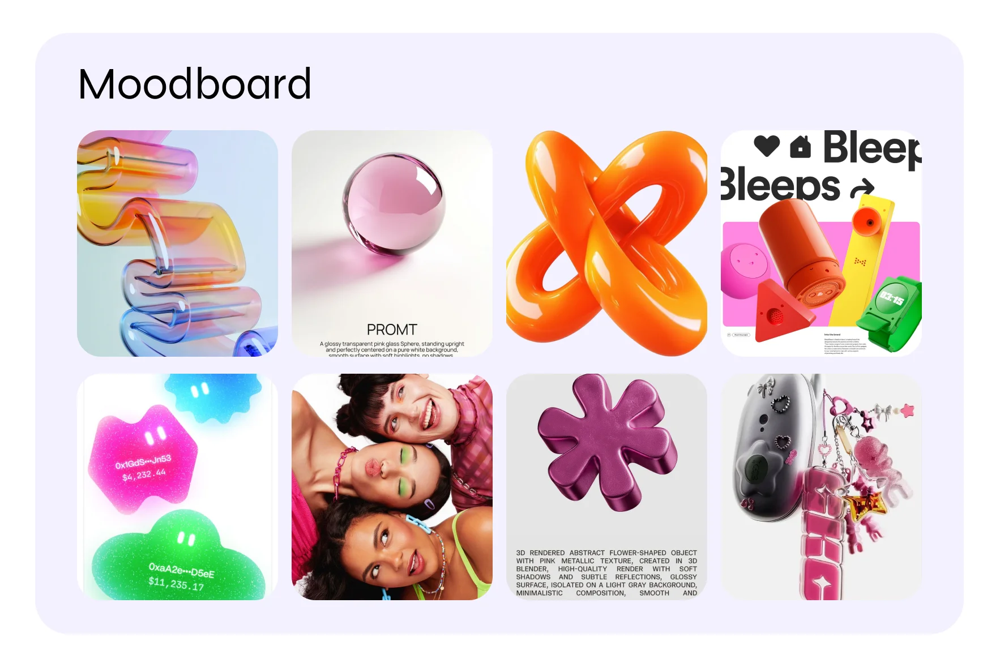
Naming
Sensori, then Trace, then forage.
Sensori was the working name in the first Figma Make build. Trace came next, tested in a range of typefaces. forage stuck: it’s what designers already do, wander and gather.

Logo
The o became a bloom, then the app icon.
After a round of type tests, a sketch on graph paper turned the o into a hand-drawn bloom, and the final wordmark kept the wobble of the pen. The bloom became the app icon.
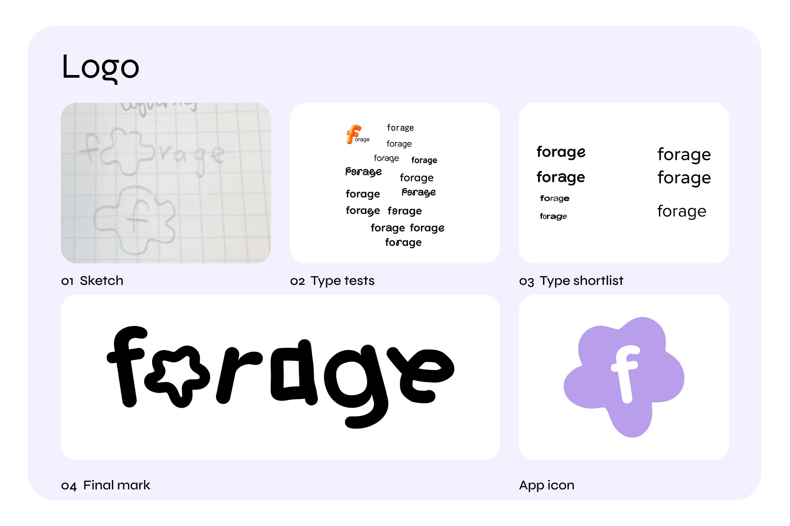
Visuals & color
Four colors, one for each kind of capture.
Early brand visuals leaned on 3D objects and taglines like “The world is your moodboard.” The palette that stuck has four colors, one for each kind of capture: image, color, type, and motion.
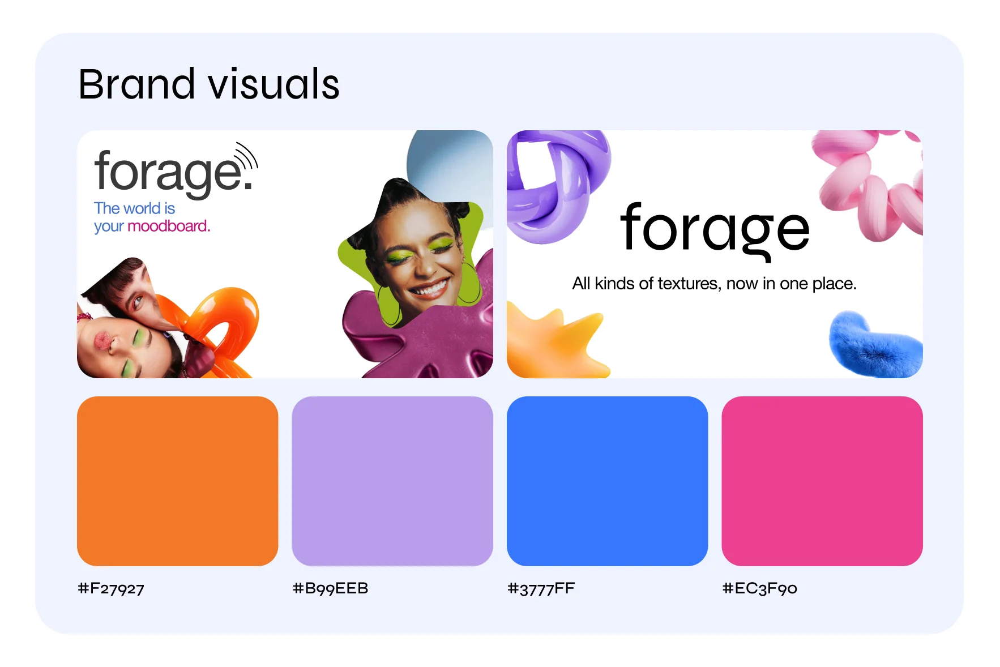
Submission & feedback
We submitted a demo film, a deck, and a live prototype.
The film shows forage the way it’s meant to be used: on the street, in the moment. The Figma Slides deck walks judges through it, with the prototype embedded.
Feedback
18 likes and one comment that summed it up.
Our submission post on Devpost got 18 likes from other FigBuild participants, and one comment.
Reflection
The ring is the hook. The pipeline behind it is the product.
It’s easy to stop at the wearable, because that’s the part people photograph. The harder design work was everything after the gesture: what a capture turns into, what it’s called, and how you find it again a month later.


Takeaway · Product
A shared vocabulary is a design tool. Agreeing on names and outputs first let four people build one product in 72 hours instead of four.
Takeaway · AI
AI works best here as infrastructure: it does the sorting a designer would otherwise put off. Success is reuse, not saves.
Omer Saeed · on our Devpost post
“This is insane, love the concept”